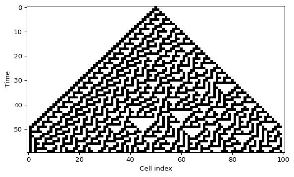

1D Cellular Automata
Elementary Rules and Space-Time Diagrams
Elementary cellular automata are one of the cleanest examples of emergence in a discrete system. Each cell stores a binary state, each update only depends on the three-cell neighborhood, and repeated rule application creates nontrivial large-scale patterns (Wolfram 1983).
Local state and neighborhood
Let \(x_i^t \in \{0,1\}\) be the state of cell \(i\) at time \(t\). An elementary cellular automaton updates the row through a local rule
\[ x_i^{t+1} = f\big(x_{i-1}^t, x_i^t, x_{i+1}^t\big). \]
Because each neighborhood has three binary entries, there are only \(2^3 = 8\) possible patterns. A rule is therefore an 8-entry lookup table.
Encode the rule table
By convention we order the neighborhoods from 111 down to 000.
rule_number = 30
rule_bin = np.array([int(bit) for bit in f"{rule_number:08b}"])For Rule 30 this produces the binary table 00011110, which tells us the output for each of the eight neighborhoods.
Implement the local update
def apply_rule(state, rule_bin):
new_state = np.zeros_like(state)
for i in range(1, len(state) - 1):
neighborhood = state[i - 1 : i + 2]
index = 7 - int("".join(neighborhood.astype(str)), 2)
new_state[i] = rule_bin[index]
return new_state
Solved:
apply_rule()
def apply_rule(state, rule_bin):
new_state = np.zeros_like(state)
for i in range(1, len(state) - 1):
neighborhood = state[i - 1 : i + 2]
index = 7 - int("".join(neighborhood.astype(str)), 2)
new_state[i] = rule_bin[index]
return new_stateThis first version keeps the boundary cells at zero because the loop only updates indices 1 through len(state) - 2.
Simulate many time steps
Now wrap the update in a reusable simulator.
def simulate_ca(initial_state, rule_number, steps):
rule_bin = np.array([int(bit) for bit in f"{rule_number:08b}"])
grid = np.zeros((steps, len(initial_state)), dtype=int)
grid[0] = initial_state
for t in range(1, steps):
grid[t] = apply_rule(grid[t - 1], rule_bin)
return gridPlot the space-time diagram
iterations = 80
grid_size = 121
initial_state = np.zeros(grid_size, dtype=int)
initial_state[grid_size // 2] = 1
grid = simulate_ca(initial_state, rule_number=30, steps=iterations)
plt.imshow(grid, cmap="binary", interpolation="nearest", aspect="auto")
plt.xlabel("Cell index")
plt.ylabel("Time")
plt.show()Interactive initial row
The script amlab/cellular_automata/cellular.py lets you click on the first row, toggle cells, and recompute the automaton immediately. That is a good way to build intuition for how sensitive a rule is to its initial condition.
What to look for
- Does the pattern stay symmetric or break symmetry quickly?
- Do you see long diagonal structures, nested triangles, or irregular texture?
- If you change one cell in the first row, does the effect stay local or spread through the whole diagram?
What’s Next?
One rule is enough to learn the mechanics. The next page turns the simulator into a small experimental lab where you compare Rule 30, Rule 90, Rule 110, and Rule 184.
References
Wolfram, Stephen. 1983. “Statistical Mechanics of Cellular Automata.” Reviews of Modern Physics 55 (3): 601–44. https://doi.org/10.1103/RevModPhys.55.601.